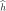
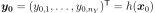

QuadraticTaylor¶
-
class
QuadraticTaylor(*args)¶ Second order polynomial response surface by Taylor expansion.
- Available constructors:
- QuadraticTaylor(center, function)
Parameters: center : sequence of float
Point
 where the Taylor expansion of the function
where the Taylor expansion of the function
 is performed.
is performed.function :
FunctionFunction
to be approximated.See also
Notes
The approximation of the model response around a specific set of input parameters may be of interest. One may then substitute
for its Taylor
expansion at point . Hence is replaced with a first
or second-order polynomial  whose evaluation is inexpensive,
allowing the analyst to apply the uncertainty anaysis methods.We consider here the second order Taylor expansion around .

Introducing a vector notation, the previous equation rewrites:
where
- 
is the vector model response evaluated at ;
 is the current set of input parameters ;
is the current set of input parameters ;-
is the transposed Jacobian matrix evaluated at ;
- is the transposed Hessian matrix.
Examples
>>> import openturns as ot >>> formulas = ['x1 * sin(x2)', 'cos(x1 + x2)', '(x2 + 1) * exp(x1 - 2 * x2)'] >>> myFunc = ot.SymbolicFunction(['x1', 'x2'], formulas) >>> myTaylor = ot.QuadraticTaylor([1, 2], myFunc) >>> myTaylor.run() >>> responseSurface = myTaylor.getResponseSurface() >>> print(responseSurface([1.2,1.9])) [1.13655,-0.999155,0.214084]
Methods
getCenter()Get the center. getClassName()Accessor to the object’s name. getConstant()Get the constant vector of the approximation. getId()Accessor to the object’s id. getInputFunction()Get the function. getLinear()Get the gradient of the function at .getName()Accessor to the object’s name. getQuadratic()Get the hessian of the function at .getResponseSurface()Get an approximation of the function. getShadowedId()Accessor to the object’s shadowed id. getVisibility()Accessor to the object’s visibility state. hasName()Test if the object is named. hasVisibleName()Test if the object has a distinguishable name. run()Perform the Quadratic Taylor expansion around .setName(name)Accessor to the object’s name. setShadowedId(id)Accessor to the object’s shadowed id. setVisibility(visible)Accessor to the object’s visibility state. -
__init__(*args)¶ Initialize self. See help(type(self)) for accurate signature.
-
getCenter()¶ Get the center.
Returns: center :
PointPoint
where the Taylor expansion of the function is
performed.
-
getClassName()¶ Accessor to the object’s name.
Returns: class_name : str
The object class name (object.__class__.__name__).
-
getConstant()¶ Get the constant vector of the approximation.
Returns: constantVector :
PointConstant vector of the approximation, equal to .
-
getId()¶ Accessor to the object’s id.
Returns: id : int
Internal unique identifier.
-
getLinear()¶ Get the gradient of the function at
.Returns: gradient :
MatrixGradient of the function
at the point (the
transposition of the jacobian matrix).
-
getName()¶ Accessor to the object’s name.
Returns: name : str
The name of the object.
-
getQuadratic()¶ Get the hessian of the function at
.Returns: tensor :
SymmetricTensorHessian of the function
at the point .
-
getResponseSurface()¶ Get an approximation of the function.
Returns: approximation :
FunctionAn approximation of the function
by a Quadratic Taylor expansion
at the point .
-
getShadowedId()¶ Accessor to the object’s shadowed id.
Returns: id : int
Internal unique identifier.
-
getVisibility()¶ Accessor to the object’s visibility state.
Returns: visible : bool
Visibility flag.
-
hasName()¶ Test if the object is named.
Returns: hasName : bool
True if the name is not empty.
-
hasVisibleName()¶ Test if the object has a distinguishable name.
Returns: hasVisibleName : bool
True if the name is not empty and not the default one.
-
run()¶ Perform the Quadratic Taylor expansion around
.
-
setName(name)¶ Accessor to the object’s name.
Parameters: name : str
The name of the object.
-
setShadowedId(id)¶ Accessor to the object’s shadowed id.
Parameters: id : int
Internal unique identifier.
-
setVisibility(visible)¶ Accessor to the object’s visibility state.
Parameters: visible : bool
Visibility flag.